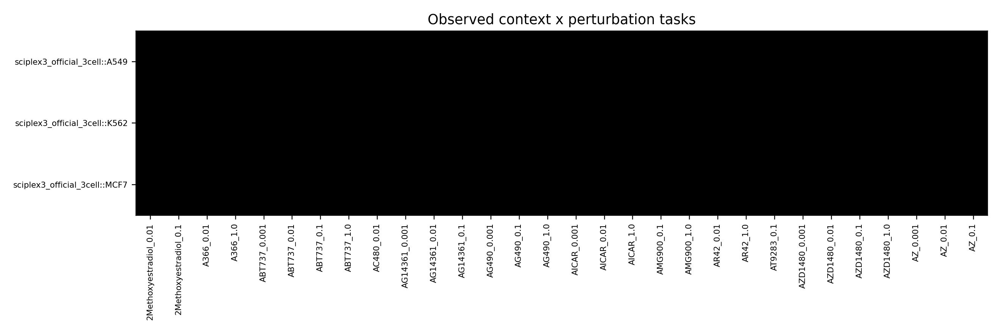
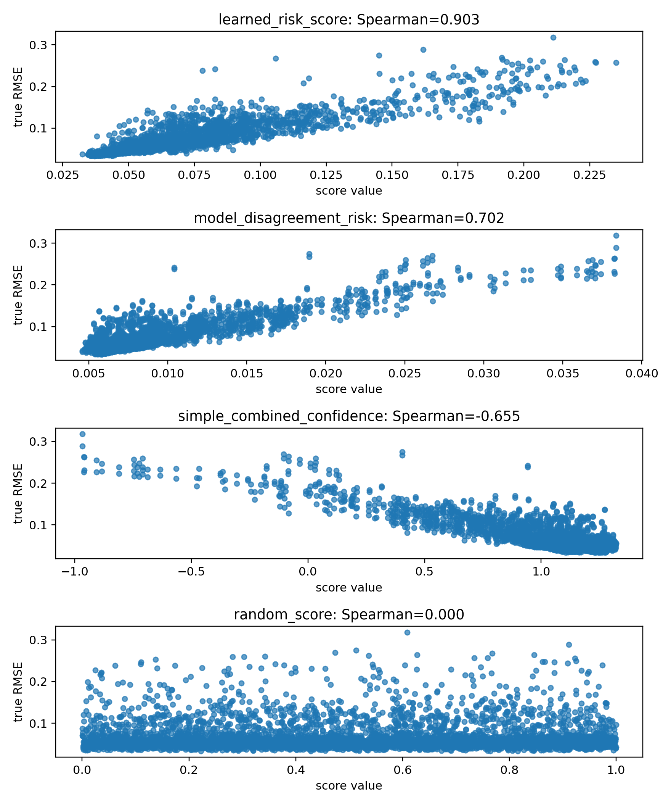
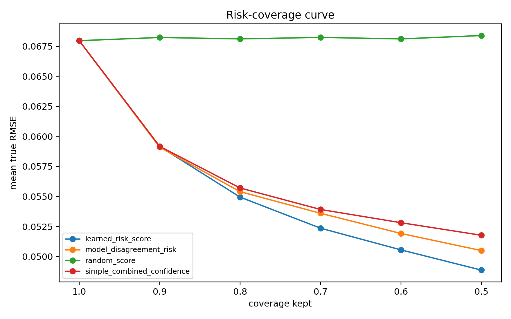
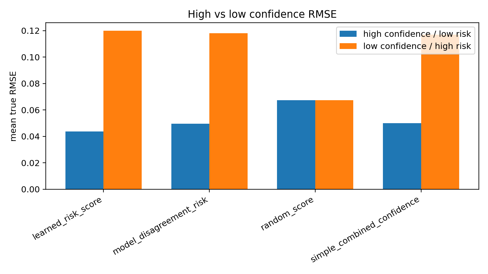
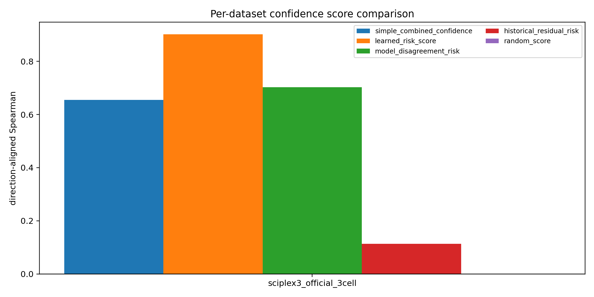
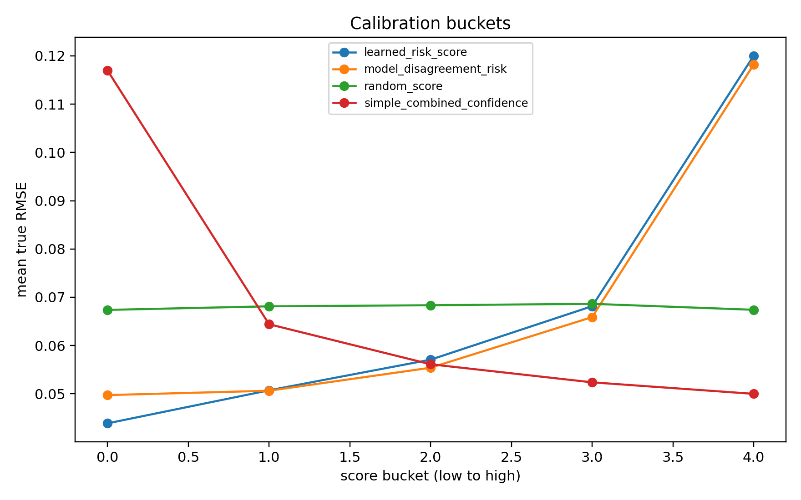
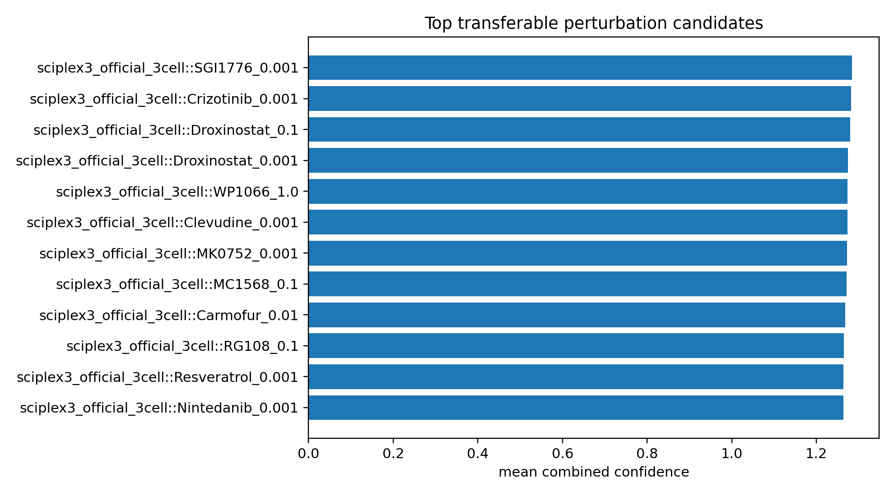

E16 sciplex3 full-743 gene3000
官方三细胞系全部 743 个共享 drug-dose，3,000-gene sensitivity。
tasks
2229
drug-dose
743
genes
3000
learned rho
0.903
disagree rho
0.702
1. 面板构建
| dataset | n_tasks | n_contexts | n_perturbations | n_genes | n_raw_tasks | n_shared_perturbations | n_selected_perturbations |
|---|---|---|---|---|---|---|---|
| sciplex3_official_3cell | 2229 | 3 | 743 | 3000 | 2237 | 743 | 743 |
2. 主结果
| dataset_name | simple_combined_confidence_aligned_rho | simple_combined_confidence_risk_cov_80_improve_pct | learned_risk_score_aligned_rho | learned_risk_score_risk_cov_80_improve_pct | model_disagreement_risk_aligned_rho | model_disagreement_risk_risk_cov_80_improve_pct |
|---|---|---|---|---|---|---|
| sciplex3_official_3cell | 0.655412 | 18.030781 | 0.902518 | 19.142855 | 0.702461 | 18.480168 |
3. Overall 信号排序
| score_name | score_type | n | direction_aligned_spearman | risk_cov_80_improve_pct | high_low_rmse_gap |
|---|---|---|---|---|---|
| learned_risk_score | risk | 4458 | 0.902518 | 19.142855 | 0.076174 |
| model_disagreement_risk | risk | 4458 | 0.702461 | 18.480168 | 0.068485 |
| simple_combined_confidence | confidence | 4458 | 0.655412 | 18.030781 | 0.066996 |
| support_count_score | confidence | 4458 | 0.224376 | 0.613685 | 0.006459 |
| historical_residual_risk | risk | 4458 | 0.113473 | 4.646985 | 0.021702 |
| random_score | confidence | 4458 | -0.000003 | -0.199204 | -0.000021 |
| prediction_magnitude_risk | risk | 4458 | -0.010143 | 10.344747 | 0.031762 |
| context_similarity_score | confidence | 4458 | -0.122310 | 0.177821 | -0.006012 |
| ood_distance_risk | risk | 4458 | -0.202511 | -4.045340 | -0.013927 |
| perturbation_stability_score | confidence | 2016 | -0.506280 | -5.055776 | -0.052401 |
4. 边界
本轮是 gene3000 sensitivity。真实 GEARS/CPA/scGPT 逐模型验证仍是单独任务。
5. 图件








